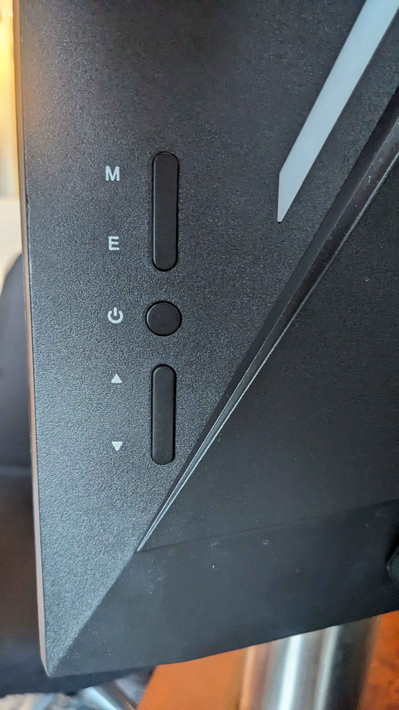

Thank you for taking care of Cora! Here's everything you need to know about my home. Cora-specific information is here. Call or text anytime if you have questions or need anything! 949-370-1987
"Living Room"
"Alexa, turn on/off ...
*If you have any problems with the lights and are unable to turn them on, let me know and I will turn them on using my phone and you can then manually control them.
Watching TV / Using the monitor
- My monitor swivels and can be moved around a bit.
- Buttons to control it are on the back side of the bottom right corner:  The circular button in the middle is the power button. The button next to the "E" allows shows you the input source selections, up and down arrows on the bottom let you toggle through choices, and the button next to "M" selects your choice. Also, the up/down arrows control volume.
- There are HDMI cables in one of the desk drawers.
- There is an Amazon Fire Stick plugged into one of the HDMI spots, and the remote control is on the desk. Just push some of the buttons on the firestick remote to wake it up when you're turning the monitor on, and it should pop up.
- The remote does not control the volume, but I have bluetooth speakers that work with the remote! They are blue and are above the shelf with the plant. Turn one of them on and it should connect (They are called Wonderboom 1 and Wonderboom 2 if you need to mannually connect them).
- Sometimes the monitor can be a little tempermental. Call me if you have any issues and I'll try to walk you through getting it set up!
Other
- If you feel like the floor needs to be cleaned, the broom and vacuum are in the kitchen next to the refridgerator. I also have a roomba if you want to have that run instead (its currently not set to a timer, so press the big circular button to make it start cleaning).
- Extra sheets and towels are in the bookshelf with the plant on top.
- There is a weighted blanket on the bed. If you want to use a down comfortor instead, it's in the closet on top of the moving box on the floor. It is already in it's duvet cover.
- The curtains are blackout, and I have privacy cling wrap on the lower part of my windows. Please leave the curtains open when you're not there so Cora can look out the window.
Kitchen
- Dishes, glasses, and flatware are in the cabinet above the sink. Everything except stemware and silver items can go in the dishwasher (I put the silver spoons in the bookshelf with the plant on top just to have them separate, and the silver bowl in the cabinet above the sink can't go in the dishwasher.)
- A filtered water jug is in the refridgerator.
- All cleaning supplies and garbage bags are under the sink.
- Extra paper towels are on the shelf by the front door.
Bathroom
- I have a hair catcher in the shower drain. I cleaned it out before leaving, but it usually needs to be emptied after each shower or it’ll keep the water from draining.
- Medication is on the bathroom door if you need anything.
- Some extra toilet paper is in the bathroom, but the rest is on the shelf by the front door.